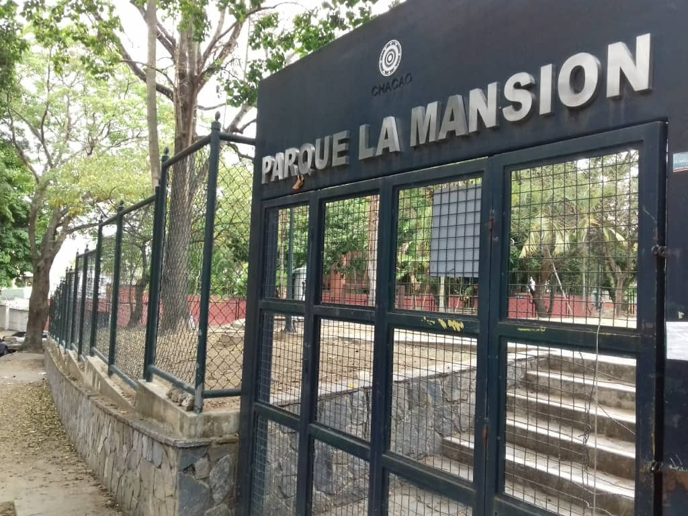

Parque La Mansión - Chacao
Trimestre 1718-03

Acerca del proyecto:
ESPACIOS DE USO PÚBLICO: PROPUESTA DE UN PLAN DE MANEJO PARA EL PARQUE LA MANSIÓN
El PROYECTO REDES desarrolla un Plan que como instrumento rector propone definir las acciones, actividades y lineamientos básicos para el uso del parque con el fin de atender las solicitudes elevadas por los actores de la comunidad considerando las densidades e intensidades de uso como condicionantes de la propuesta, asi como las disposiciones legales y reglamentarias aplicables. El objetivo del Plan esta orientado a impulsar acciones de corresponsabilidad en el uso y defensa del parque como un espacio público que comprometa tanto a las comunidades vecinas como a las autoridades del municipio Chacao.